해외선물 - [UB] 작은 마디하나 따먹는 스캘핑
오전 4시부터 국채는 꼼짝을 안하고 있다가 증시가 오픈한 6시30분부터 조금씩 움직이기 시작함
지금 일봉을 보면 NR7이 만들어지고 있음 (Narrow range bar #7)
일곱번째 봉이 아주 작은 inside Bar임
전체적으로보면 하락하다가 멈춰서는 모습인데 거래량이 증가하고 있는 걸로봐서는 일단 바닥확인중인걸로 보임
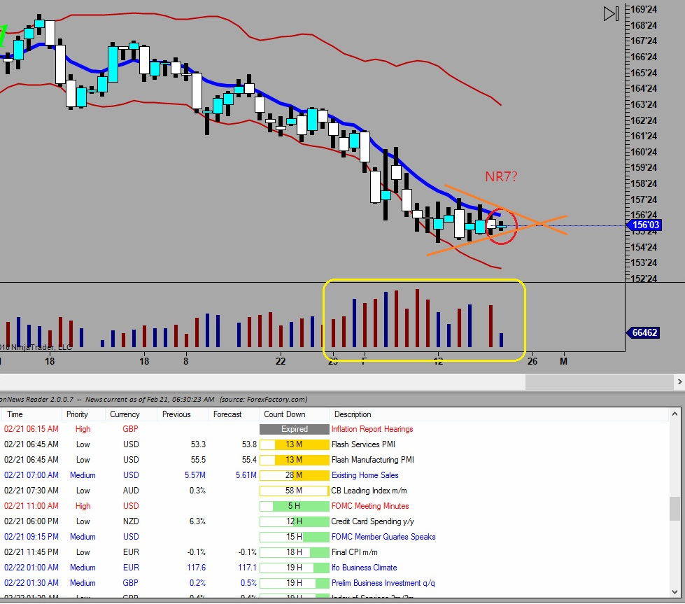
결국 매매신호 나와서 진입
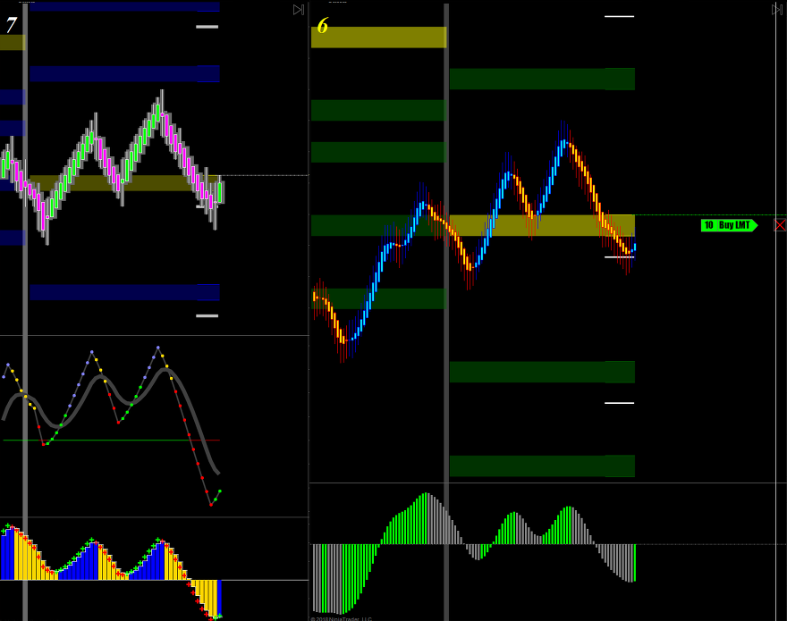
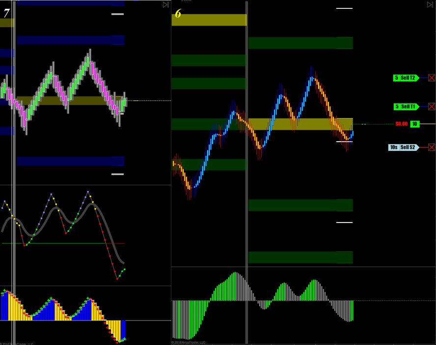
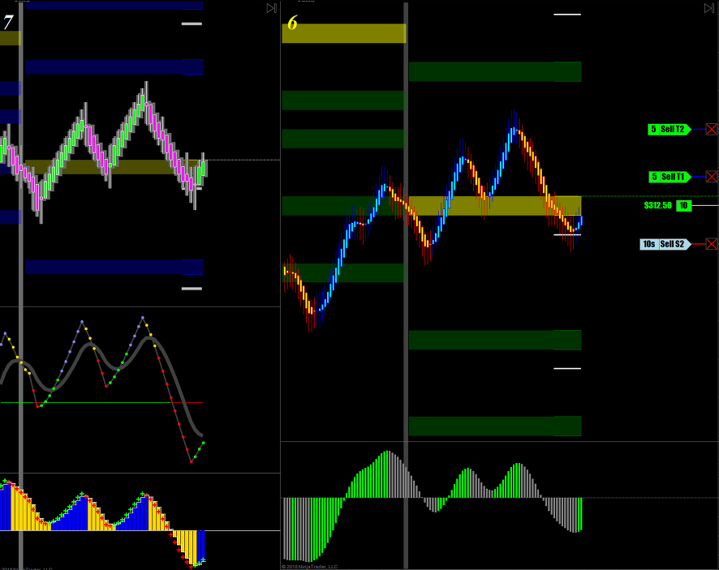
1차 수익실현 - 곧바로 뒤쪽의 손절주문을 앞으로 이동시켜 수익을 지킴
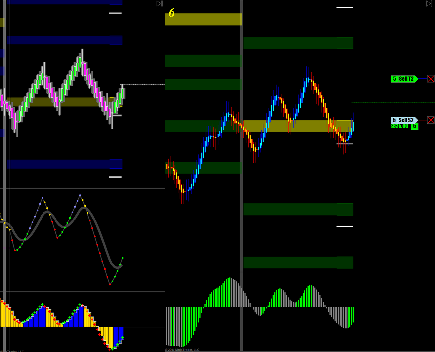
거리를 두고 따라붙음 목표가도 계속 상승시킴. 물들어올때 노를 젓자 영차 영차..
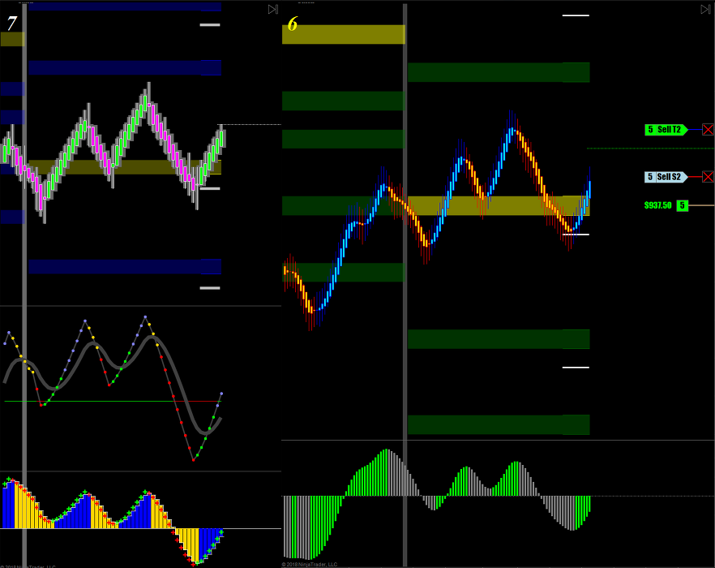
목표가가 코앞인데....
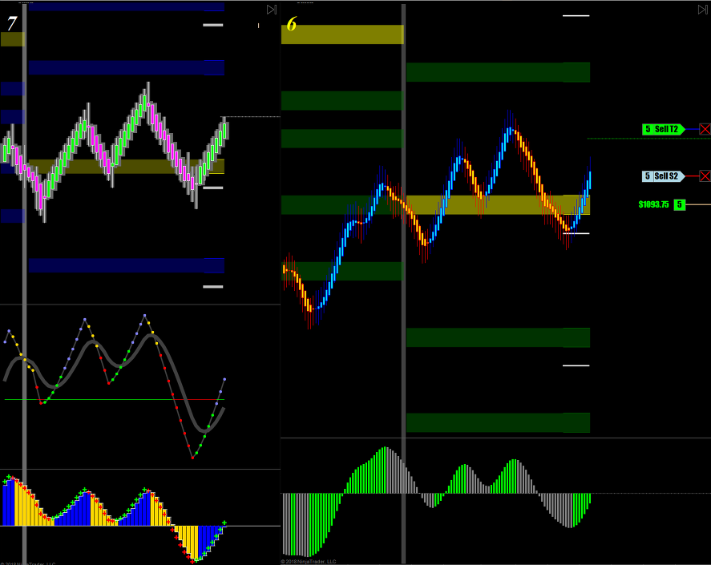
순식간에 후퇴하는 바람에 익절주문에 걸림
하지만 손절을 앞으로 땡긴 바람에 괜찮은 수익확보
만약 손절을 이동시키지 않았으면 수익매매가 손실매매로 바뀌는 순간임
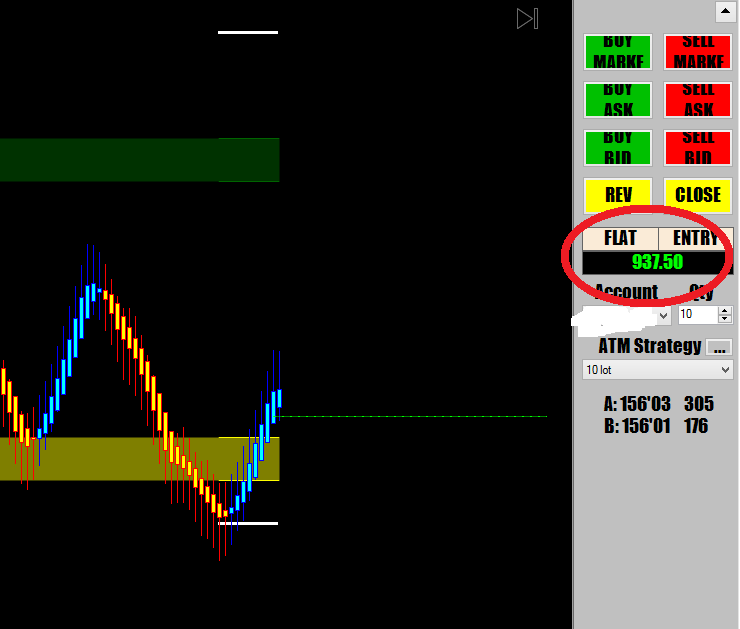
이번엔 매도신호 출현 볼것도 없이 매도
기계적 매매에서는 이거저거 따지지말고 신호나오는대로 그냥 질러 질러 질러 !!!
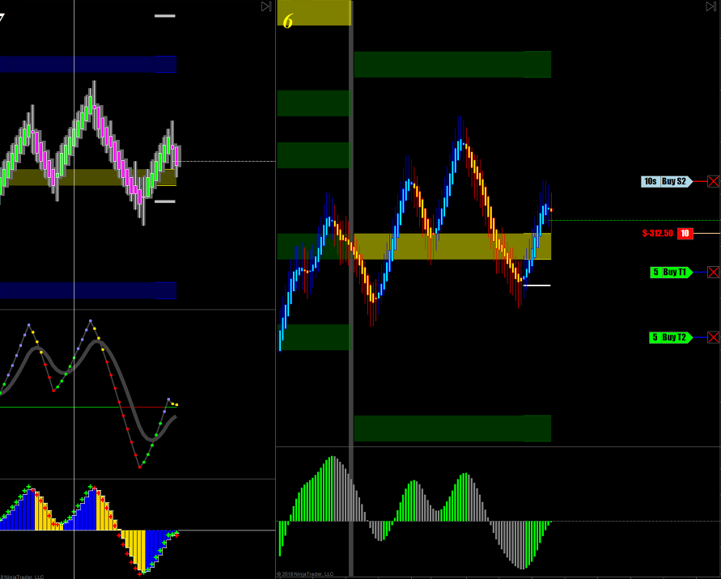
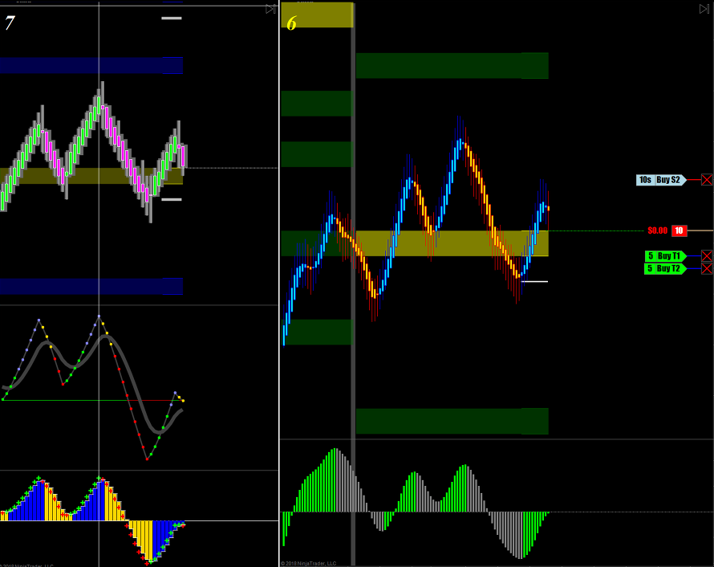
오늘 장이 매우 적게 움직니는 Narrow range Bar이기 때문에 짧게먹고 나와야 함
특히 주가가 오늘의 메인 피봇 근처에 있을 때에는 싸움이 치열하기 때문에 조심해야 함
일차수익실현
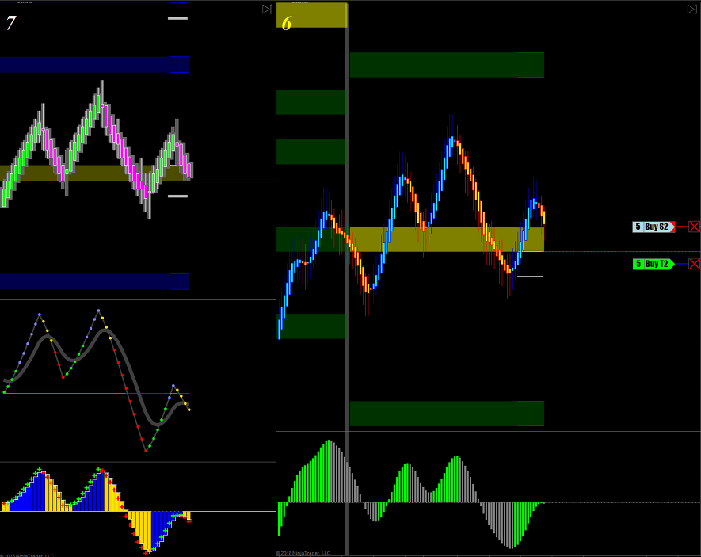
매매 끝
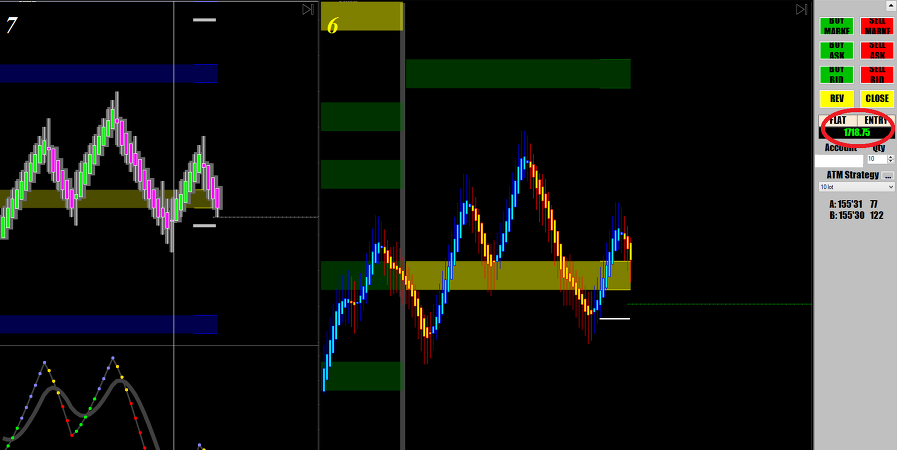
작은 마디하나 따먹는 스캘핑에서는
진입시점이 매우 중요함 너무 늦게 들어가면 먹을게 없음
따라서 본인의 매매스타일에 따라서 진입시점을 정확하게 알려주는 차트셋업이 중요함